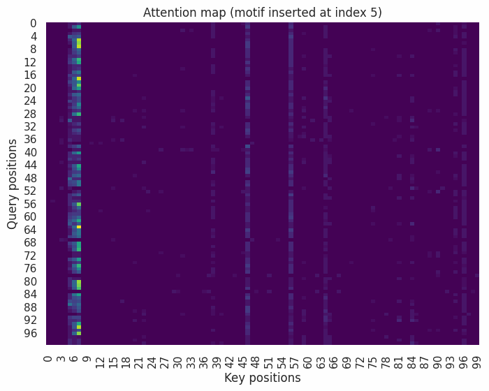

Experiment: Positional Encoding vs No Positional Encoding for Self-Attention
Objective
Compare a Self-Attention+MLP with and without a fixed sinusoidal positional encoding for a simple sequence classification task.
Dataset
-
Definition
We generate 7000 sequences (Train: 5000; Validation: 1000; Test: 1000), each consisting of S vectors.
Each vector is 8-dimensional and sampled from a standard normal distribution (mean = 0, standard deviation = 0.5).
For approximately half of the sequences, we replace four consecutive vectors at a random position with a motif: four 8-dimensional vectors formed by scaling a linearly decaying vector np.linspace(1.0, 0.2, 8) by alternating scaling factors [3, -3, 3, -3].
Sequences containing a motif in the first half are labeled 0, while sequences containing a motif in the second half are labeled 1.
This dataset is position-dependent, as the label depends not only on the location of the motif but also on the specific [3, −3, 3, −3] pattern in that order.
-
Shape and Distribution
- Train: Shape 5000 × S × 8, Count 1/0: (2503, 2497)
- Validation: Shape 1000 × S × 8, Count 1/0: (501, 499)
- Test: Shape 1000 × S × 8, Count 1/0: (492, 508)

Models
- Self-Attention + MLP (With Fixed Sinusoidal PE): 6,177,569 trainable parameters
- Self-Attention + MLP (Without Fixed Sinusoidal PE): 6,177,569 trainable parameters

Training
- Comparison of Self-Attention+MLP with and without PE for binary classification across sequences of varying lengths.
- Optimizer: Adam, initial learning rate = 1e-4, all other settings default.
- Loss: BCEWithLogitsLoss, default settings.
- Training duration: 50 epochs.
- Weights are initalized identically in both models.
Findings
- Within our experimental setup:
- For short sequences, both Self-Attention+MLP models—with and without positional encoding (PE)—successfully converge, achieving high validation and test accuracy.
- For longer sequences, only the Self-Attention+MLP model with PE converges, while the model without PE fails to converge.
✅ : Model converges successfully | ❌ : Model fails to converge within 50 epochs
| Sequence Length |
Self-Attention + MLP (PE) |
Self-Attention + MLP (No PE) |
| 250 |
✅ |
✅ |
| 500 |
✅ |
✅ |
| 750 |
✅ |
✅ |
| 1000 |
✅ |
❌ |
| 1250 |
✅ |
❌ |
| 1500 |
✅ |
❌ |
| 1750 |
✅ |
❌ |
| 2000 |
✅ |
❌ |
| 2250 |
✅ |
❌ |
| 2500 |
✅ |
❌ |
| 2750 |
✅ |
❌ |
| 3000 |
✅ |
❌ |
Interpretability
In self-attention, each token embedding has three vectors: Query (Q), Key (K), and Value (V).
- Query (Q): What the token is looking for.
- Key (K): What the token offers to others.
- Value (V): The information content carried by the token.
- Attention weights: Computed as
softmax(QKT / √dk), telling how much each token should attend to others.
- Output: The new token representation is a weighted sum of the value vectors according to attention weights.
In this figure, we visualize the attention weights as a heatmap to show how the model’s focus changes when the insertion point of a predefined motif is manually shifted along a sequence of length 100 8-dimensional vectors.
The three shifting bright columns indicate that the query tokens are attending to the three key tokens corresponding to the motif.

Code